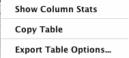
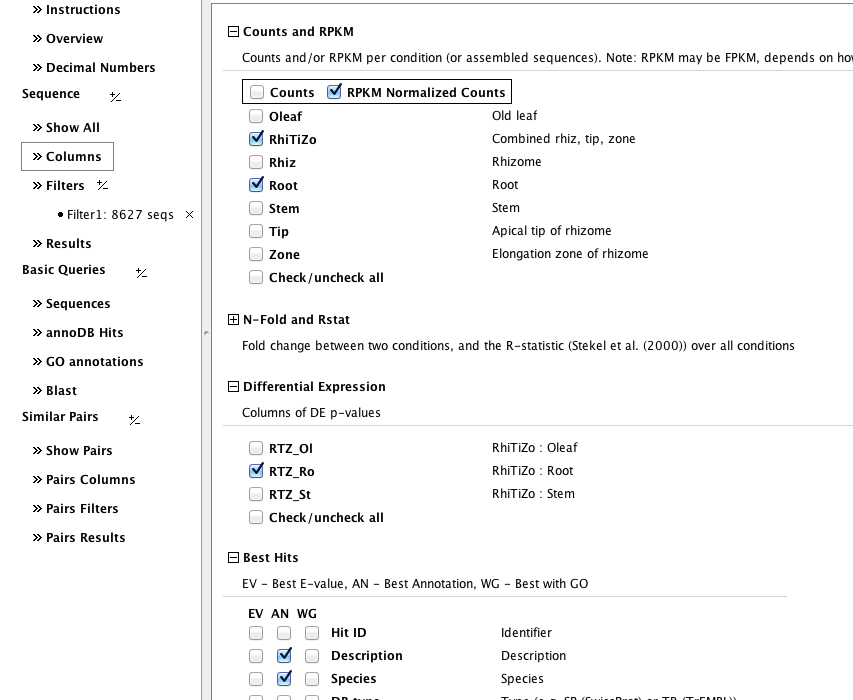
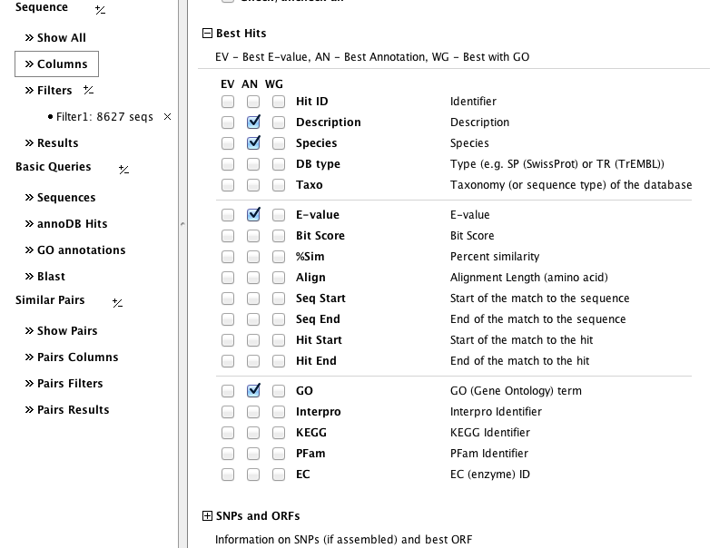
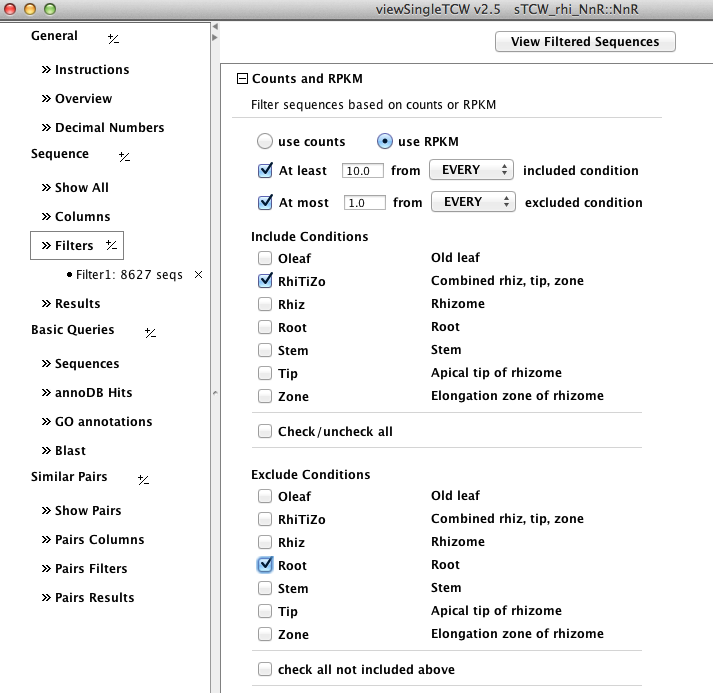
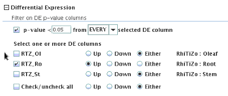
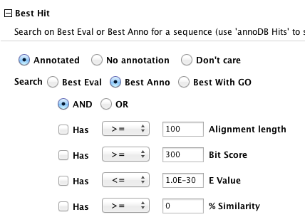

Main Table
| Table | Columns | Filters |
The ➤ items under Sequence produce the main table of sequences. Selecting Show All shows all sequences with whatever columns are set in Columns.
The table below was produced by filtering for all sequences that (1) have annotation and
(2) are up-regulated for rhizome (RhiTiZo) compared to root.
The columns can be sorted and moved around. A row can be selected to view the sequence.
| The Table... allows the options on the right. Export is a popup window that allows various formats to be written, e.g. a tabular format of the columns, FASTA format of the sequences, etc. |  |
| The Show Column Stats results in a pop-up window of statistics for all numeric columns, as shown on the right. | 
|
Set Columns | Go to top |
|
Click here to see all column sections, which
change the columns shown in the table shown above.
A few major groups of columns are shown on the left and below.
The Counts and RPKM columns displays the input expression levels as either their raw counts or normalized RPKM. The Differential Expression columns displays the DE for two or more conditions. |  |
| Go to top |
There are "three" best hits for each sequence that has annotation:
|  |
Set Filters | Go to top |
|
Click here to see all filter sections, which
applies one or more filters to the sequences shown in the Main Table.
A few major groups of filter are shown on the left and below.
The Counts and RPKM filters allow finding sequences that have differences in Counts or RPKM based on user supplied numbers. The example on the right would filter result in all sequences that have RPKM>=10.0 for condtion RhiTiZo and RPKM<=1.0 for condition Root. |
 |
| The Expression Level filters allow finding sequences that are up or down regulated in respect to the selected conditions. |  |
| The Best Hit filters allows querying on the three types of best hits described in Columns above. More extensive queries are provided in Basic Query annoDB Hits, but this set of filters can be used with other filters such as Differential Expression |  |
| Go to top |
{kind=link}
{kind=link}
{kind=link}
{kind=link}
{kind=link}
{kind=link}
{kind=link}
{kind=link}